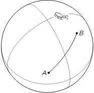

机器人剧场
关于技术、表演和叙事之间关系的评论性写作。
Non-fiction 返回目录 来源：机器人剧场.docx

机器人的剧场
我们经常犯一个毛病：将『真实』与『正确』混淆。 前者代表一种『物理』或者『生活中』可以发生，或者必定会发生，符合现实发展规律的结果；而后者是指『无矛盾』的合理推断，其实与『真实』与否并无直接关系。
我们来到数学中给大家举一个例子。直线的基础定义是什么？ 直线：两点之间最短距离的延伸。 虽然直线在欧几里得几何学中并没有真正的被定义，但是绝大多数的规定基于两个原则： 1，两点之间最短距离的『线段』是『直线』的一部分。 2，直线是该线段在一个方向和相反方向的无限延伸。 换句话说，这里的『直线』定义之中，只需要两个要素『最短距离』和『延伸』。并没有『直』的需求。而且，这种定义隐含了一个原则，让人不太容易察觉。 两点之间有着不止一条的连接方法，唯有直线最短。 但是在我们的直觉之中，『直线』最主要的特征就是『直』，意思就是『不弯曲』。而我们对于『不弯曲』这个观点，是建立在『刚体』上的。所谓『不弯曲』的意思，实际上除了我们日常生活中的直觉之外，还有一个潜在的定义。那就是 『不弯曲』意味着在直线上面取三个点 a,b,c。中间的那个点假设是b，则 ab+bc的值永远是一个极小值。 换句话说，假设空间中有两个点，则在任意位置取一个点，使得这个点距离另外两个点的距离最小，则三点共线。这里的『共线』也和平直没有关系。 这么说来，直线根本上就和『直』没有任何关系。且与那种我们与生俱来的关于『平直』的认知有很大的区别，这一点让很多人头疼。大家就不理解，为啥不用『平直』来定义直线呢？ 原因在于，相对于直线，『平直』这个概念更不好定义。 比如说，在一个球面上的三角形内角和大于一百八十度。很多人就叫起来了：球面上的三角形，其边长根本就不是直线，那连接起来的多边形根本就不是三角形好不好！还讨论啥三角形内角和的问题？ 真的如此吗？ 我们假想一个球面，在上面有两个点： A和B。两个点之间的距离最短的是什么？ 这里要注意一下，我说的是球面，是一个二维的球面。并不存在可以穿越球面的可能，所以大家不要想象在一个三维空间里面的球面，似乎可以有『虫洞』可以打通两个点。 或者你可以想象一个坚硬的大理石球，球面上只有一只蚂蚁。他既不能飞跃离开球面，也不能穿透球面到达球体之中，他只能在球面上活动。 其实很简单，两点之间的距离最短的还是直线。因为我们不能离开球面，所以我们的『直线』是完全处于球面之上的，且符合『直线』的定义。那这个条线就是所谓的『测地线』。也就是连接两点的『大圆』的一段弧。（经线就是典型的大圆）
可能有些人不服气。这个『测地线』根本就是一个曲线嘛！我的回答是错错错！为什么呢？ • 这条线符合『直线』的定义：两点之间距离最短，再无更短。所以不违背直线的定义。 • 我们不是在三维空间里来看二维球面，而是在二维球面上观察二维球面。二维球面上当然是有弯曲的曲线，但一定不合『测地线』重合。可以证明，测地线就是最短的距离，其他都是曲线。 • 想象一下这个球面极其庞大，其足够小的面积内基本可等同于欧几里得的『平直空间』。当然这个足够小的面积，其含义要用到微积分，并非近似。如果不理解，则你想象人类生活在地球上就可以直观的感受到这一点。而且如果你嫌地球不够大的话，则放在整个宇宙就行，而爱因斯坦的宇宙，是属于一个有界无边的闭合曲面，这下你放心了吧。 所以，『测地线』本质上是直线在曲面空间中的延展，本身和『弯曲』与『不直』没有任何的关系，理解这一点非常的重要，但是也很难。因为我们根深蒂固地相信我们的物理直觉和生活常识。 关于逻辑的『正确性』和命题本身的『真实性』的区别是人类最近才发现的。
在我们的生活中，无论你做哪一个判断，都存在『真』和『不真』的两种选择。我们可以把所有的这种判断题目叫命题，命题就是一个判断，如果我们相信『选择公理』的话，我们就一定相信『排中律』，即一个命题要么真，要么假。不存在不真也并不假，或者又真又假的情况。（选择公理和排中律是一个巨大的坑，这里就并不展开了）。 但是，这里的『真』到底是什么意思，就特别值得玩味了。 我们看这么一个命题： 所有的天鹅都是白色的。 这个命题是真，还是假？当然是『假』（False）。因为很明显有黑天鹅。但是你是基于什么做出这个判断的呢？你当然会说：『废话，当然出于对大自然的观察啊！』 这当然是没有错的。绝大部分命题都可以作此判断。比如『1+2=2』当然是假的。那么我们再看一个命题： 我在说谎。 这个是真还是假呢？如果这个命题是『真』（Ture），那么这句话就成立，被确定为『是真实的』。那么就这个人就是在说谎。那既然这个人在说谎，那么整句话就不真实啊！那就应该是假（false）。可是如果这个命题被判断为『假』（false），，就应该是『我在说谎』这句话是谎话，可是这不反过来证明了这话是真的吗？ 这就是著名的『说谎者悖论』。本质上，这个悖论的立足点就在于将『命题本身的真实性』与命题的『逻辑真实性』混为一谈，导致了悖论。 无独有偶，震古烁今的哥德尔不完备定理也用了这一招。这个定理粉碎了数百年数学家企图用一条公理系统，无脑推导出所有数学证明的机械想法。其证明过程惊天地泣鬼神，不可详说，但是道理却很简单。他要证明总存在某个命题，你无法证明其真或者假。为此哥德尔巧妙的建构了一个命题，这个命题用最简单的方式就是说： 命题G: 本命题无法被证明。 如果该命题G为『假』，即意味着这个命题不能在数学中被证明,则该命题G的『逻辑』成立。也就意味着在逻辑系统中确有不能证明也不能证伪的命题。 但是，如果该命题为『真』，或者说，G命题是可以被证明的，则G命题成立，可以顺利得出结论，数学中总有命题无法被证明，这是由于G命题本身的『含义』所决定的。 所以无论怎么样，哥德尔不完备定理都是成立的。 老实说，按照哥德尔的意思，他就是故意的混淆了『命题本身的真假』和『命题所代表的含义是真是假』这两个不同的概念，导致了矛盾。 几乎所有的悖论，都和说谎者悖论有莫大的关系。这是现代数学一次灾难深重的危机。只要你搞出来一个包含其自身，或者描述自身的否定性概括，都会导致矛盾。 换句话说，一个句子（陈述）的含义有两种。一个是句子本身的含义，一个是句子在上下文中的合理性。比如我们考虑这样句话： 『本语句包含了超过二十个字的字符』。 这个句子没有语病，主谓宾定状补俱全，且含义清楚，应该是一个『合法』的句子。可是这个句子是『正确』的吗？ 当然不是了！这个句子只有十五个字嘛！本身就是在胡说八道。可是人谁也不能说，这句话『不成立』。这就是典型的『逻辑合理』和『真实』的重大区别。 如果觉得很有趣，再看一个例子。 下面这句话是对的。 上面这句话是错的。 对于这两句话本身而言，都没有问题。可是你放在『上下文』（context）中就让人产生混乱了。无论你承认那一句话，其『真实性』都会被挑战，或者被推翻。两句话在人类能理解的『含义』上自相矛盾。但是句子本身的构架，其逻辑本身是没有错的，也就是说，这两句话都没有犯逻辑错误。 但是人类总是在这一点上弄不明白。总是下意识的把一个事件的逻辑判断和现实真实与否混为一谈，直到现在人类也是花了好几千年才慢慢明白这个道理的。真是不容易啊！
聊到这里，我们就可以谈一谈小说文学或者影视叙事了。文学（或者其他的艺术形式）是一个典型的自我架构体系。跟数学非常像，在有限的几个设定和人物架构之下，可以展开一整套完整的叙事，至于这些演绎出来的内容是否真实地发生在这个世界上，则根本无人关心。 如同逻辑推理一样，人们把写作和叙事有时候叫『演绎』，这个原本是数学上用的词汇也被用在这里，实际上是非常有道理的。 比如武侠小说。在一个武林的架构之下，通过几个基本『江湖道义』原则，类似于欧几里得的几个公设（公理），再附加上一些设定，就发展出一个非常庞大的体系。尽管我们都知道，这个世界并不存在侠客和江湖门派，但是只要在小说文本中是『自洽』的，也就是说不会在事先确定好的『规则』下推导出矛盾，我们就是『相信的』。 很多故事不精彩，或者观众不喜欢，并不是在于这个故事本身是否『真实』，乃是因为不能『自圆其说』而造成的。 当然能够自圆其说并不能证明叙述就一定成功，或者精彩。我的意思是，能自圆其说乃是一个最低要求。一个不能自圆其说的叙述，在短时间内具有某种特别强烈的特征或许能吸引观众，但从长久看，其生命力并不强壮。 或者换一个角度，不能自圆其说的叙述，自身具有某种别的特质，使得消费者喜欢，则这个特征具有强烈的某种时代特征，如果时代发生改变，或者换一个消费思维，则这种特征会荡然无存。 这就是我认为Cult影片不能长久保存的原因。在当前的文化背景之下，某些影片的Cult气质让影迷欢喜不已，但实际上在这些影片当时生产出来的时候并不受欢迎，即使是他是希望迎合观众的。只有过了一段时间，产生距离美之后，在一定的历史条件下，这种特质才会被唤起。但是经历了过去之后，我觉得Cult气质无法被下一个文化特征社会真正喜欢，仅仅做研究的用途。
再比如科幻小说也是，架空历史也是，都是在几个基本设定之下展开的一种复杂文本创作。 由此我可以敏锐地得出一个结论。文学创作本质上就是一套逻辑体系。文学创作，或者叫叙述（narrative）的本质是体系架构，也就是在合乎逻辑的基础下演绎出一个故事。而故事的本身表征着一系列递进的关系，存在因果联系的一个体系。 叙述公设：A，B，C，D…… 叙述单元和进展：a，b，c，d…… 叙述逻辑：如果a，则b，因为A；如果b，则c，因为B…… 我们翻译成『武侠叙述』的体系，大概是如下的架构： 叙述公设：人分等级（A），所有人害怕死（B），武力高低决定胜负（C）…… 叙述单元和进展：侠客某，，武林秘籍，门派诞生，仇杀，盟主…… 叙述逻辑：因为有了某侠客，所以某门派诞生，大家集结成社团，因为公设『B』；因为有了某武林秘籍，所以引发杀戮，因为公设B和C；最终盟主诞生，因为公设A。 这种逻辑公设和链条当然要比这个要复杂得多，但是熟悉这一类叙事的读者一定非常明白这个道理。因为所谓的一整套逻辑虽然正确，但是未必在这个社会历史上真实存在，可是你只要不违背这个公设和推理，我们就津津有味的看下去，忽略所有。这个逻辑可以发展为非常细致的细节，并且几乎可以无限度的推理下去。 而架空历史小说则更大胆，他只要用几条简单的公设，就可以创造出整个完全虚构，但充满细节的历史和世界，比如《银河英雄传》，《指环王》等等。
那么我们也就可以把『叙述』看做一个符号体系。即所有互相存在因果关系和递进关系的体系，是由一个符号体系推演出来的，只要他内部没有矛盾，内部能够证明自己的其中一个命题（故事结点）是合理的即可。 叙述最大的要求如果是『自圆其说』，那么叙述最大的难点就在于能够建立一套『强壮』的原始设定，或者叫『不言自明』的公设，使得其合理推导出来的诸多推论（叙述进展）是逻辑合理的，这样读者就能够顺利的看下去，充满了乐趣。 而这种乐趣和看数学证明的乐趣几乎一模一样。因为人类的大脑在自我验算一大段合乎逻辑的推论过程中，产生了一种快乐和愉悦感，使得他感觉世界是被掌控的，是合乎某种架构的，是可以被理解的，也就是有安全感的。 而当叙述不讲逻辑，胡乱演进的时候，就会让大脑的逻辑推理链条被打断，产生沮丧感。你看我们平时听别人讲话，如果对方逻辑混乱，我们会产生极其严重的厌恶情绪，就是这个道理。
但是我们不要忘记了，我们看我正在写的这篇文字的时候，文字本身是有含义的。『微风』和『冷霜』这两个词汇多多少少会给你带来一丝凉意。因为我们的大脑会自动脑补一个符号背后的真实含义。我们的大脑将一个符号体系自动转化为你物理真实性是根深蒂固的。 但是如果我把这两个词换成『Breeze』和『Frost』给没学习过英文的朋友们，他还有什么『凉意』的感觉吗？ 来一个更彻底的，这两个词换成以下两个ASCII代码符号：\u5fae\u98ce和 \u5bd2\u971c，请问通晓世界各国语言的朋友，你还能感觉到『凉意』吗？ 如果说你觉得这里面还有字幕和英文符号，你还算熟悉的话，那么我们将其转换为摩尔斯代码，那就只剩下一些小点和横杠了。 -... .-. . . --.. . ..-. .-. --- ... – 除非你是译电员或者特工，立刻能感受到这串代码背后的诗意，否则任何人将毫无感觉，并且产生一种极其强烈的厌恶情绪。但实际上，对于一个熟悉某种符号体系的人来说，他就完全能感受其含义。 所以，采用哪种符号体系不重要，重要的是，这个符号体系能被理解，且自洽，无矛盾。熟练的译电员是完全可以实时地用摩尔斯电码谈恋爱的。
人类的语言系统，其实本质上和数学系统是完全等同的一个符号体系。在这个世界上，除了智慧生命，我们考虑一个实实在的世界和宇宙，其实并没有语言和文字这个东西存在。如果不是智慧生命的创造，你走遍世界或者走遍宇宙都不会发现一个符号体系。如果你发现了，你一定会知道，这里是存在智慧生命的，地球人也好，外星人也好，某种灵长类动物也好，总之是有智慧生命的。大自然自身并不会自发产生一条符号体系。 人类的语言和文字体系并不是一开始就如此的发达，而是从极其简单的元素堆砌开始的，慢慢通过逻辑链条变得复杂起来。如果我们剖析语言文字背后的逻辑体系，则完全可以将语言文字，或者说叙述与判断，分解成一个个抽象的逻辑符号与运算符，就如同数学一样，完整地建构出一个具有意义的世界。 实际上前面提到的哥德尔定理就是这么干的。哥德尔不是要证明包含皮亚诺算术体系（包含99.999%的数学体系）在内的数理逻辑，总有证明不出来也证伪不出来的命题吗？他要怎么做呢？数学命题那么多，几何，代数，函数，逻辑等等你要怎么归纳呢？ 有办法！ 他发现不管你什么命题，不管你是讲函数的，还是讲几何的，还是讲集合论的，我一律把某个命题定义成一个『数』，这个数就叫做『哥德尔数』。命题的证明，其实就是将多个命题互相交织，得出一个逻辑结果。那么我们可以等同地，将某个『哥德尔数』看做是其他『哥德尔数』的运算。这个运算不一定是加减乘除乘方开方，只要我规定一套『哥德尔运算符号』即可。那么某个命题的证明即可变成以下的形式：
某命题p的证明 = 该命题的在某符号体系中的一系列运算。
所以哥德尔的证明根本就没有出现啥几何代数，微积分或者三角函数，他就是建立了一套符号体系，通过运算符来进行操作，从而得出某结果。
同样的，人类的语言文字体系，实质上是等同于以下形式： 语言文字体系 = 一组语言文字符号 + 运算规则。
如果人类最早诞生出语言文字的时候我们在现场观看，我们可以发现当时人类所能使用的语言文字数量极少，大致就是少量名词，动词和量词。然后由于对单词的叫法不同，尤其是『语法』或者叫『运算规则』的选择不同，就产生了不同的语言。不管语言是 SVO类型（主语+动词谓语+宾语），还是SOV类型（主语+宾语+动词谓语），其最终所指出的『含义』是相同的。只是由于『运算规则』不同。 并且有趣的是，随着人类的迁徙交流，许多词汇是相同的，比如印欧语系中的相当多单词是相同的，但是语法却始终保留自身民族的特点。似乎也可以证明『运算规则』才是符号体系中更重要的东西。
既然语言文字本质上是符号体系，那么我们就不得不说，语言文字有着本身的逻辑正确性，其结果和『真实性』并不存在必然的联系。换句话说，一个语言文字体系，或者更高级一点说，叙述本身是有自身逻辑的，并不需要建立在一个『真实性』的基础上。即使这句话所代表的含义永远不可能发生，也并不表示这个『体系』是错误的。之前的说谎者悖论与上下文悖论，已经淡淡地说明了这一点。 句子的语法正确却没有任何实际意义，可见于乔姆斯基的一个著名的句子： Colorless green ideas sleep furiously 这个句子据说在英文中从来没有出现过，但语法是正确的，具体的意思是：『无色之绿想法疯狂的睡觉。』这个例子本来用于否定语言来自随即发生，但是这里可以用来说明，句子本身的含义是否『正确』并无本身的意义。 实际上我们可以发明一下一段话，同样有这样的结果，但是它至少是得乔姆斯基的这句话有了一点意义。 『它只能是绿色的想法，它促使我们在秋天购买这些由棕色纸质皮肤覆盖的休眠白色植物物质块，并亲切地种植它们并照顾它们。令我惊讶的是，在这个封面下，他们正在以如此高的速度进行劳动，以便给我们带来突如其来的春天开花的灯泡之美。虽然冬天统治着地球，但这些无色的绿色想法却在疯狂地睡着。』 类似于这样的句子，一个简单的人工智能可以写出毫无语法错误的亿万行来。虽然我们觉得它没有意义，但是你不能否定它确实存在，并且可以存在。
我们来看这两个例子，注意：这两句话在含义上没有任何相似性，却有某种莫名其妙的『缘分』： 画·上·荷·花·和·尚·画 A·B·C·D·E·Di·Ci·Bee·A 上面这一句是中文的『回文』，就是正着念和倒着念都是一个发音。但是不管怎么说，总还有点物理真实性在里面，我们大脑还能想象出一个画面。而第二句也可以算回文，你正着念和倒着念也是一样，但是你的大脑就想象不出来任何有意义的画面了。
说明一下，第二句话之所以没有写成『ABCDEDCBA』是有原因的。因为上面这句中文只是读音相同，用字并不一样，所以下面这一句直接用相同的字母回溯将不符合『规则』。只有最后的字母A符合规则。
这个例子说明，『物理真实性』含义完全不同的符号体系，却可以被『智慧生命』看做是同样/同类的句子，到底是为什么呢？为什么我们能够一眼看出这两个句子虽然相隔十万八千里，可是我们却能够将其联系起来，就是因为他们的内在规则是相同的。 我们可以假想一下整个宇宙毁灭了，所有的物理存在全部消失。这个时候，来自于另外一个宇宙的外星生命发现了这个宇宙唯一存在的一本书。书上所描述的事物，是基于一个完整的世界做参考系的，而这个世界，对于一个外星生命来说是完全不可想象的。那么我的问题是，这本书有意义吗？ 答案是有。因为这本书所使用的符号体系，并不依赖于真实世界做基础，只要这个体系本身是逻辑的，自洽的就行。想象这本书上面只有一页纸，上面是这样的一个图形，这个图形可以用语言文字等价地表示出来。
()(.)(.)(..)(…)(…..)(……..)(………….) 尽管外星生命未必懂得括号代表什么含义，但是他们应该在很短的时间内就发现，这是一个具有许多规则的符号集合，且显而易见。就是一个括号里面的点，等于前两个括号点的和。尽管它并不能用我们的语言来描述成斐波拉契数列。但是它们绝对能看出来，这绝不是一个毫无意义的符号体系。 有人可能会说，语言文字无法表达图像和绘画啊，你怎么能说符号体系就能描述一切呢？语言文字怎么能说是万能的呢？ 当然是可以的啊！ 任何一副图像，不管是艺术家气息的毕加索名画，还是一副烂俗的色情图片，只要我们用下列四行运算符号即可表达： 1，分辨率等于 X乘 Y。 2，按照分辨率，依次将每一行的像素拆分成三种基本颜色编码系统，编码宽度是Z位。 3，每一组01代码代表一个像素的颜色混合。比如一个八位宽度的代码红绿蓝三个颜色采样，则可能是：00110010，11001111，00010010. 4, 按照分辨率排列01代码。
理论上只要有人能够不断给一个天才念01代码，他是可以还原出整个图像的。而只要按照一定的顺序，则一部活动影像也可以还原出来，同理，声音也可以照此处理。 不仅如此，任何物体的方位，颜色，存在，运动轨迹，语言，外形，气味等等都可以被一套叙述体系所描述，而所谓整个世界的变化或者人类的活动，都是可以被描述的。 换句话说，只要信息还留存着，这个世界是否真的在是无关紧要的。完全可以在另外一个地方还原出来，甚至只需要虚拟运行即可。这一点许多科幻小说已经阐明了这一点，无需多说。
我们回到叙述本身。既然本文已经反复说明『叙述』自有一套逻辑而无需真实性的依托，尽管你人们暂时还无法摆脱对『叙述逻辑』有一个清晰的现实世界做参考的习惯，但是这种习惯正在慢慢被打破。这就好像数学一开始是用来解决实际问题的，到了后面慢慢可以脱离实际问题，变得极其抽象，但依然无数人乐此不疲一样。 古代人创造神话，即使这个神话并不存在，但是很明显，越古老的神话，就越接近于人类所能感知的现实世界。就算是神话，其实也不过是现实世界稍加变化的翻版。希腊神话就典型地说明了这一点。而越接近现代，新创造的神话就越来越脱离现实世界，新的神话越来越抽象，其最高主神最后连一个模模糊糊的形象都已经被不再存在，而仅仅变成了一个抽象的概念。 神话的高度抽象化，在某种程度上是基于人类抽象思维的提高。古代的泛灵论思想将神祗具体到每一个具体的物件之上，但是越到晚近的现代，一个统一的，高度抽象的神祗越来越流行，神祗都不需要具有人格。
对于现有的叙述逻辑，我们可以总结以下两点： • 人类还必须依托物理世界真实性来理解。 • 人类开始逐渐理解叙述本身的逻辑具有『娱乐性』。并能暂时脱离思维习惯来理解并得到满足。
那么基于第二点，我似乎看到了某种可预见性的结果。那就是：叙述的革命在不短的未来会产生。 虽然依然是依托世界真实性来方便人来理解，可是其自身的逻辑性会有一些新的变革出现。就如同数学上那些超越人类思想极限的思维方式一样，比如康托尔的对角线删除法，比如罗素的集合论悖论，蒙特卡罗算法等给人极大震撼一样。文本叙述本身的逻辑变革也会迎来突破。 实际上，多线索叙事，蒙太奇这些技巧本身就是一种叙述逻辑的突破，其自身不产生任何的物理真实性，因为这个世界的事物发展时空连线，并不是多线索叙事和蒙太奇跳跃的。但是一旦你使用了就产生了巨大的感染力。 我的问题和展望是：还有没有新的叙述逻辑和惊人的结果出现呢？我们在写作和创作文本的时候，是否还没有找到一种或者几种『全新』的叙事规则呢？尽管这些规则从来没有被用过，但是只要符合自身的一开始设立的逻辑，符合运算规则即可。以前我们不可以想象，但是如今人类的宽容度确实是在提升。 这就好比我们读到卡尔维诺的《如果在冬夜，一个旅人》（关于文本的文本）和米洛拉德·帕维奇的《哈扎尔词典》（字典类小说）这样具有强烈震撼的文本一样。我一直在想，这个文本意义上的新叙事模式，从未在普通人心中引发足够的思考。尤其是后者，用辞典的方式撰写小说，是一个非常新颖但是却让人可以理解的运算规则。如果不仅仅在文学层面，在电影层面如何进行？ 只要做到足够好，即使这个新的逻辑架构和运算规则不是『最刺激』的，最具有娱乐性的，只要是新的，其感染力也是无比巨大的。现实人们在完全虚拟的游戏世界中，享受游戏规则所带来的的规则制约，反而能完全抛开真实叙事而完全沉浸其中，就是一个明证。 实际上，数学的体系架构和文学的体系架构在我看来是完全等价的。那么数学中的许多思维进步，比如公理化系统，比如递归函数、Lamda算子理论等许许多多的概念，都可以作为文本叙述的一种突破，就好像数学本身的不断突破一样。 实际上你完全可以把卡尔维诺的《如果再冬夜，一个旅人》看做函数自身被引用的例子 f ( f(x) ) 的文学再现。至于里面的x到底是什么，则被降为第二位的。关键是自身被引用这种运算法则。 而《哈扎尔辞典》，是有一个百科全书的词典来架构一个叙述。通篇都是一个一个词条，而不是叙述本身。这个我可以看做是数学上一个集合。这本小说本身是集合A，而词条则是子集。所有的子集的自由组合称为幂集，读者在阅读的过程中，会将子集，也就是各种『词条』在大脑中组织联系起来，等同于所以子集的自由组合。因为幂集基数总是大于集合本身基数，所以读者所产生的综合效益，则总是大于这个词条本身的简单罗列。 如果你觉得我故弄玄虚的话，当然这本小说更可以看做直截了当的『符号体系』的再现。其中『词条』等同于符号体系中的命题序列，而其运算规则，则等同于读者在阅读的过程中大脑自身所产生的联系。因为我们总是有着自己的思考方式和关联方式。这就是这本小说的魅力。
如果上述著作都还是依托于我们对整个真实世界的理解之上的话，那么如果不要求这个呢？
我们现在要讨论的就是『叙述』这件事情的未来。
如果叙述就是几个逻辑出发点（公设）和一套运算逻辑的话，那么我们就完全可以建构出几种不同的叙述体系。有些可以是以这个人类世界作为依托的，有些则完全可以不用。我们假定由足够智能的计算机编制故事。计算机当然可以在人工的干预下，编织出一个人类能看懂的故事出来，但是这毕竟比较难。 但是如果我们放弃这个限制，并不要求人类可以看懂，只要求故事（叙述）符合逻辑，且自洽，让计算机自行演绎，那么计算机就高兴坏了，他可以以惊人的速度创造出天文数字般的叙述来。 也许有人说，既然我们看不懂，那么有什么意义呢？但是，计算机可以看懂啊。只要计算机可以看懂，那么人类就不用去解读，我们只要知道，计算机能在这个故事体系内遨游且得到娱乐即可。如果计算机真的产生了情感和情绪，那么我们就不得不考虑要给机器人放松和得到娱乐的条件了。（当然，有些人认为机器人永远不会有情感，也并不需要放松。） 就好像18世纪美国的奴隶庄园一样，奴隶主在奴隶下班以后并不关心奴隶们如何自娱自乐，只要他们第二天继续干活就行，并且认为这是他们的福利。 如果我们不要求机器人一直为人类服务，准许他们在『休息』的时候，自由处理自己的情绪，或者自由地『返回』机器人的世界，让他们『自娱自乐』，好用最好的状态迎接新的工作。 那么在某程度上，机器人在暂时下班之后，则可以拜托人类的管控，利用他们自己的特长，发展出一套机器人自己的语法和运算规则，完全不用理会人类的语言和物理世界限制。考虑到计算机极高的运算力，这必将如脱缰的野马，进入到一个全新的世界。
这个时候，如果某个人类贸然闯入了机器人的『下班之后的世界』，除了光怪陆离之外，偶然间看到了一个『机器人剧场』，然后『看到』了这个剧场舞台上所演出的一个节目，猜一猜人类会看到什么呢？
我相信有以下几个坚实的推论。 • 人类极大概率完全无法理解节目的内容和形式，完全彻底无法理解。不禁无法理解其内在逻辑，而且完全无法理解外在形式。也许是纯数学的，也许是纯符号化的，也许是根本就是我们想象不出来的一个形式。 • 人类能从机器人『陶醉』的表情中得出一个结论：该节目自成逻辑且完备。因为剧场上演的内容必定被机器人所理解。就如同一个白人奴隶主贸然闯入自己家奴隶所举办的非洲原始宗教的氛围中。他就算不能理解，但他能感知周围的人很投入。 • 人类如果能够花心思学习和解读，人类也可以最终理解『机器人剧场』，并得到享受。
当我们观看『机器人剧场』的节目的时候，我们的大脑无法将所见到的一切翻译和转化成我们对现实世界的条件反射，我们在一堆符号面前，能不能感受到快乐和满足呢？ 答案是能。这个问题你去问数论专家和一堆研究哥德巴赫猜想的人即可。 当我们一旦理解这个现实的时候，我想我们绝对能体会到一种感觉，我们人类，或者说一切智慧生命，包含由硬件建构的智慧生命，逻辑享受要远远大于现实世界真实性的反馈享受。 反过来，不同物理世界的体系就可以得到沟通，因为不依赖于物理世界反射和折射才能产生欣赏乐趣的体系，似乎更加健壮。 当机器人光临人类剧场的时候，经过学习，机器人能够看懂莎士比亚的戏剧或者一场疯狂的演唱会具有某种内在的逻辑。只是因为机器人进行了学习。而目前人工智能的方法解构人类的图像和文字，演变成计算机算法的时候，如果我们深入研究就会发现机器人完全在用一套另外的体系和架构来解构我们的艺术。 那么反过来，我们在机器人剧场进行观赏的时候，我们是否也需要进行一场艰难但幼稚的转换过程来欣赏呢？或许在机器人看来，我们的转换是多么的无厘头。